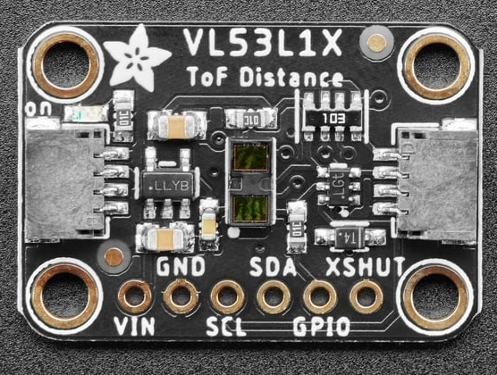

<div class="textcontainer">
<p class="margin"> </p>
<h3>Week 6: Electronic Inputs</h3>
<h4>Assignment 1: Capactive Sensor<h4>
<h4>Assignment 2: [Use + Calibrate Another Sensor]</h4>

<p class = "margin"></p>
I used the VL53L1X Tof distance sensor, which is a sensor that uses laser to calculate the distance between the object and the sensor itself.
<pre><code class="language-arduino">
#include <Wire.h>
#include <Adafruit_VL53L1X.h>
int SDApin = D1;
int SCLpin = D0;
Adafruit_VL53L1X vl53 = Adafruit_VL53L1X();
unsigned long previousMillis = 0;
const unsigned long interval = 200;
void setup() {
Serial.begin(9600);
delay(1000); // Give time for serial to start
Wire.begin(SDApin, SCLpin);
if (!vl53.begin(0x29, &Wire)) {
Serial.println("Sensor not found");
while (1);
}
Serial.println("VL53L1X sensor found!");
vl53.startRanging();
}
void loop() {
unsigned long currentMillis = millis();
if (currentMillis - previousMillis >= interval) {
previousMillis = currentMillis;
if (vl53.dataReady()) {
int distance = vl53.distance();
Serial.print("Distance: ");
Serial.print(distance);
Serial.println(" mm");
vl53.clearInterrupt();
}
}
}
</code></pre>
</div>